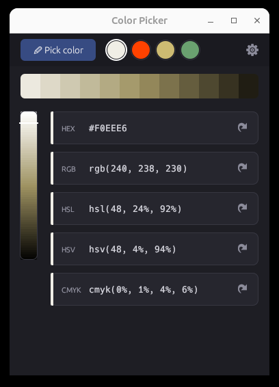

Pick any color from your screen with a magnifying glass overlay, then view and copy it in any format. Includes a full color editor with history.

Full-screen overlay with pixel-level zoom. See the exact color under your cursor before picking.
Click the copy button next to any format to instantly copy the color value to your clipboard.
Interactive color editor with saturation/lightness picker, hue slider, and all color format outputs.
Previously picked colors are saved and displayed as quick-access swatches at the top of the editor.
Choose between Pick & Edit, Pick & Close, or Editor Only modes in the settings.
Screenshot capture works on both Wayland (via grim/slurp) and X11 (via scrot) sessions.
#FF6B6B
rgb(255, 107, 107)
hsl(0, 100%, 71%)
hsv(0, 58%, 100%)
cmyk(0, 58, 58, 0)